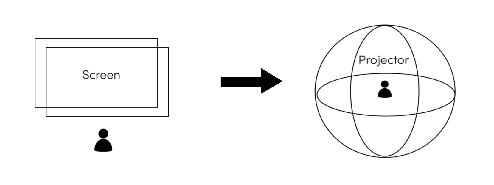
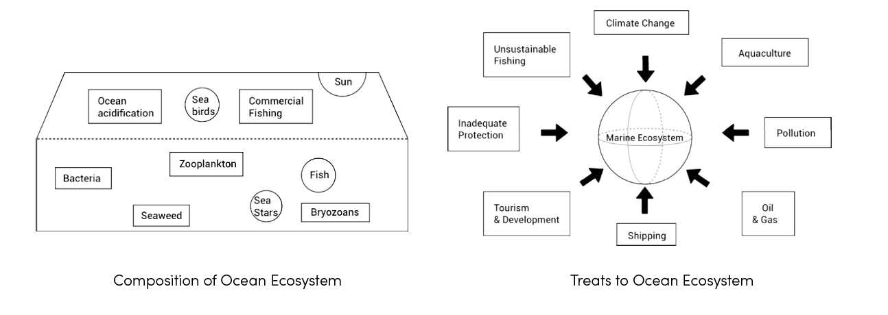
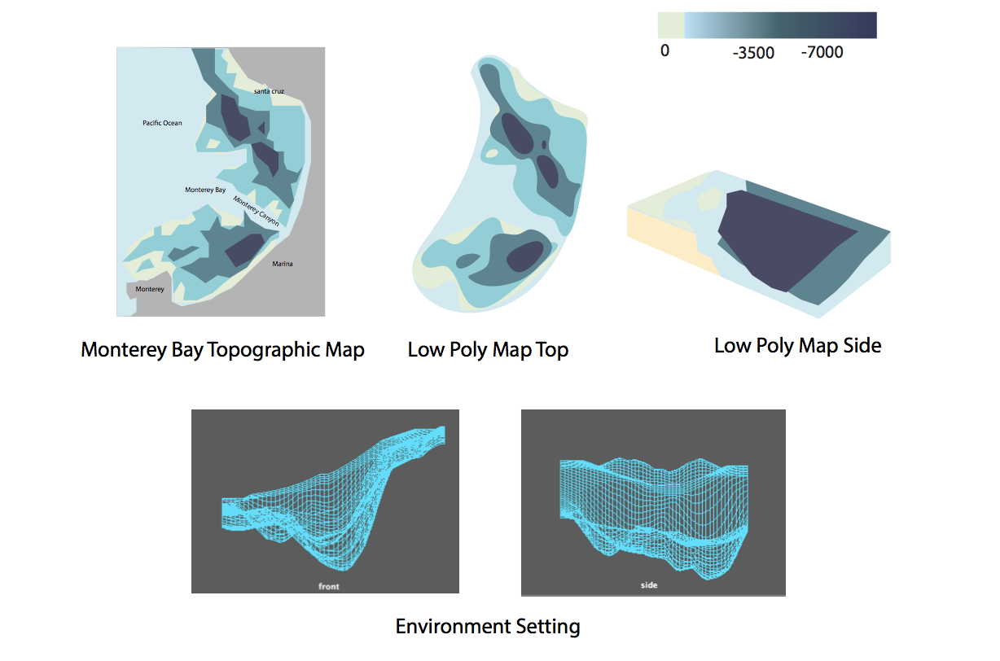

An interactive game that shows the underwater peace.
2016 - Present |Three.js + Unity
Underwater Peace is a concept game and an experiment for me to explore various forms of interactive games. The very first idea was to create a 3D web game built by Three.js and it was finished during my senior year. And now I tried to transform the web game into an immersive environment using Unity to make it more attractive and interactive.The concept of Underwater Peace is to construct a peaceful game free of complicated controls or intense story lines, in order for players to take a break from their fast-paced lives. At the same time, I hope to remind people to protect our ocean ecosystem.

Marine Ecosystem cover 2/3 of the surface of the Earth, within the oceab havitat live more than one millions marine species. However, nowaday, our habitats are destronyed, some species are lost and the climate change because of the pollution cause by human being. People alwasy ignore the marine ecosystem and even having many behaviors that will destory marine life without anwareness. 

In 1972, Hovden Cannery, the largest sh-packing plant, closed down. In 1984, at the original spot of the plant, the world famous aquarium Monterey Bay Aquarium was opened. It gave visitors an intimate tour of Monterey Bay’s beautiful natural commu- nities and other extrordinary marine environment. The aquarium inspired tourists from all over the world to care for and protect our marine ecosystem. It also inspired me to start this project. Therefore, I chose Monterey Bay as prototype for my game environment.
